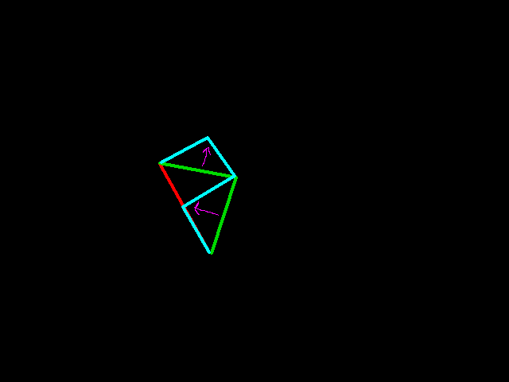
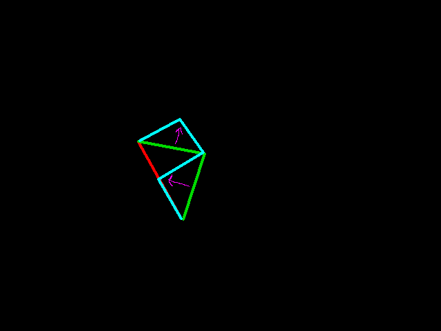

Il principio di Archimede... con la panna
Quando una torta viene immersa in panna montata, subisce una spinta verso l’alto: $$F = \rho \cdot V \cdot g$$
In questo esperimento, la densità della panna gioca un ruolo fondamentale.
Il blog dove la fisica incontra la pasticceria
Quando una torta viene immersa in panna montata, subisce una spinta verso l’alto: $$F = \rho \cdot V \cdot g$$
In questo esperimento, la densità della panna gioca un ruolo fondamentale.